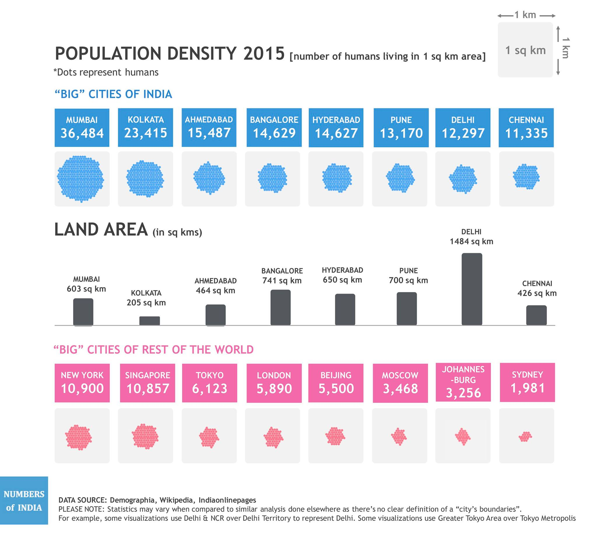

If you thought your city is over-crowded, think again.
Mumbai is, by far, the most crowded city in India.
If Mumbai and Delhi were of the same size, you would find 3 people in Mumbai for every person in Delhi.
If Mumbai and Tokyo Metropolis were of the same size, you would find 6 people in Mumbai for every person in Tokyo Metropolis.
If Mumbai and Moscow were of the same size, you would find 11 people in Mumbai for every person in Moscow.
If Mumbai and Sydney were of the same size, you would find 18 people in Mumbai for every person in Sydney.
Food for thought: Are we all moving into the so called "big" cities and making them "smaller"? Should we as a country be growing the less-ventured towns and cities? Leave your comments below.
Food for thought: Are we all moving into the so called "big" cities and making them "smaller"? Should we as a country be growing the less-ventured towns and cities? Leave your comments below.